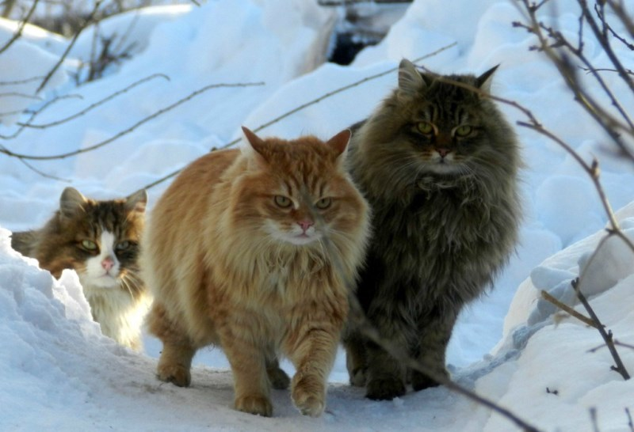

Возникновение породы
Существует несколько легенд и сказок, описывающих появление норвежского кота.
Некоторые считают, что изначально местом обитания животных была Скандинавия.
Туда они были доставлены грозными викингами. В те времена эти представители кошачьей породы использовались для борьбы с корабельными крысами. Команда корабля старалась держать животных в полуголодном состоянии, тем самым рассчитывая на исключительные охотничьи навыки.
Также рекомендуем почитать